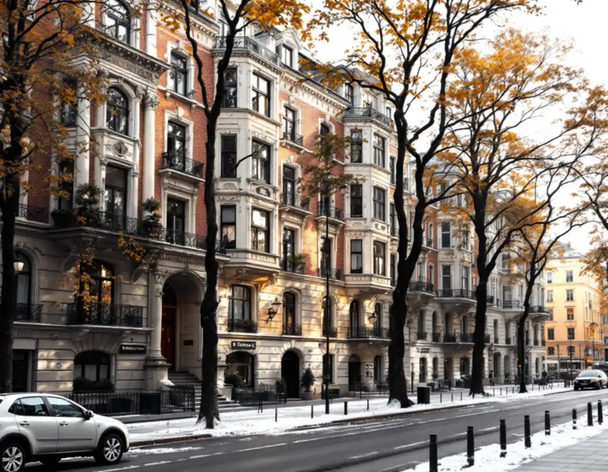
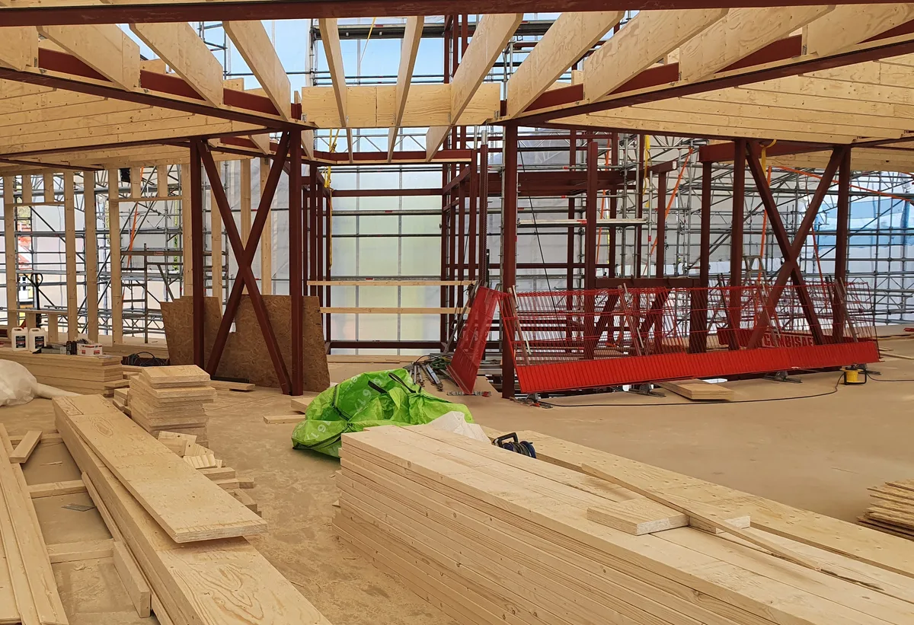
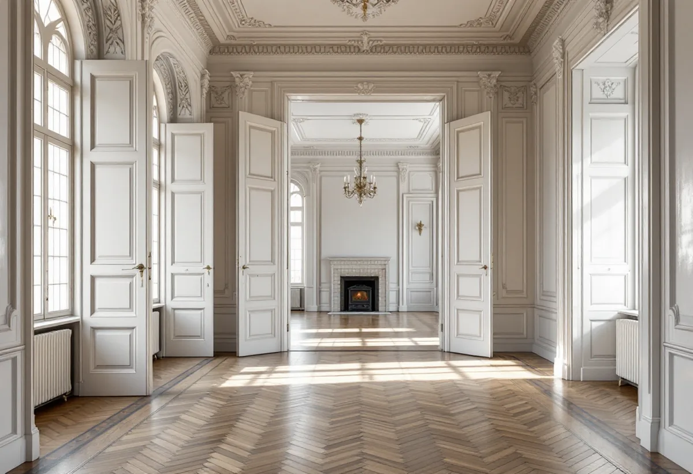

Platsbesök
Vi tittar på båda lägenheterna, väggen mellan dem och husets klassning.
Att slå ihop två lägenheter till en större våning är ett vanligt önskemål på Östermalm. Geal Entreprenad AB tar sådana projekt som total entreprenad och reder ut vad som kräver anmälan, styrelsens tillstånd och en konstruktörs bedömning.

Stockholms stad skriver att en sammanslagning av flera lägenheter inte kräver bygglov, men att du kan behöva skicka in en anmälan och invänta startbesked. Att dela en lägenhet i två kräver däremot bygglov, eftersom det tillkommer en bostad.
Anmälan krävs för åtgärder som avsevärt påverkar något av de tekniska egenskapskraven. När två lägenheter blir en gäller det i regel bärande konstruktion och brandskydd, och ofta också ventilation och vatten och avlopp.

Väggen mellan två lägenheter kan vara bärande, och då kräver en öppning i den anmälan. Staden påpekar att ritningar visar byggnadens principiella konstruktion, men att de kan vara ofullständiga och att det inte är säkert att de som byggde följde dem.
Staden kan inte hjälpa dig att bedöma om ett ingrepp påverkar den bärande konstruktionen, utan hänvisar till en konstruktör. Vi tar in en konstruktör innan något öppnas, och öppningen dimensioneras och redovisas i anmälan.
Varje lägenhet är en egen brandcell. När två blir en ändras brandcellsindelningen, och staden skriver att sådana ändringar alltid påverkar brandskyddet. En av de två entrédörrarna blir kanske överflödig, och hur den stängs mot trapphuset avgör om avskiljningen fortfarande fungerar.
Vi låter en brandkonsult beskriva lösningen, så att anmälan och kontrollplan stämmer med det som byggs. Hur den dörr som inte längre används som entré ska hanteras avgörs av brandkonsulten innan styrelsen får underlaget. Brandkonsulten beskriver också hur utrymningen ska fungera från den större våningen.
När två lägenheter slås ihop blir det ofta ett kök och ett badrum för mycket. Staden skriver att du inte behöver göra en anmälan om du ändrar planlösningen inom en lägenhet och inga tekniska egenskapskrav påverkas, till exempel om du flyttar eller bygger ut kök eller badrum.
Anmälan krävs däremot vid installation eller väsentlig ändring av ventilationssystem, och när vatten och avlopp ändras väsentligt eller installeras nytt. Ett kök som tas bort betyder att ventilation, avlopp och vatten ska pluggas eller byggas om på rätt sätt, och det behöver planeras tillsammans med föreningen eftersom stammarna är gemensamma.
Bostadsrättslagen säger att bostadsrättshavaren inte får utföra vissa åtgärder utan styrelsens tillstånd. Det gäller ingrepp i bärande konstruktion, installation eller ändring av ledningar för avlopp, värme, gas eller vatten, ändring av ventilation, ändring av eldstad eller rökkanal och annan väsentlig förändring av lägenheten.
En sammanslagning omfattar normalt flera av punkterna. Vi tar fram ett underlag med ritningar, konstruktörens bedömning och brandskyddet, så att styrelsen har något konkret att ta ställning till.
Stadsmuseets karta visar om huset är blå- eller grönklassat. Boverket förklarar att förvanskningsförbudet gäller vid alla ändringar, såväl exteriört som interiört, och oberoende av om åtgärden kräver lov eller anmälan. Stuckatur, kakelugnar och originalsnickerier i de rum som slås ihop ska därför tas om hand.
Om renovering av rummen efteråt kan du läsa under badrumsrenovering på Östermalm och golvslipning på Östermalm.

Vi tittar på båda lägenheterna, väggen mellan dem och husets klassning.
Öppningen och brandskyddet bedöms och beskrivs.
Ritningar och beskrivningar för styrelsens tillstånd.
Kontrollplan och handlingar skickas in för startbesked.
Arbetet startar när tillstånd och startbesked finns.
Intyg och kontrollplan samlas inför slutbeskedet.
Rotavdraget är 30 procent av arbetskostnaden, högst 50 000 kronor per person och år och högst 75 000 kronor tillsammans med rutavdrag. Material och resor ger inget avdrag, och du ska äga bostaden när arbetet utförs.
Skatteverket ger rotavdrag för att bygga om en bostadsrätt, för arbete inne i bostaden som du ansvarar för. För arbete som ger avdrag drar Geal det direkt på fakturan.
Öppningen i den bärande väggen, brandskyddet, hur mycket installationer som flyttas och hur rummen ska renoveras. Efter ett gratis platsbesök får du ett skriftligt kostnadsförslag.
Total entreprenad för villan.
Byggfirma →Stenstad, Lärkstaden, Diplomatstaden och Gärdet.
Takrenovering på Östermalm →Kulturvärden, förvanskningsförbud och klassning.
Badrumsrenovering på Östermalm →Husets ursprungliga kulör.
Fasadmålning på Östermalm →Gatufasad, gårdsfasad och lovfrågan.
Fasadrenovering på Östermalm →Stenstaden, Lärkstaden och villorna.
Fönsterbyte på Östermalm →Fönster och glas i Gärdets 1930-talshus.
Fönsterrenovering på Östermalm →Mönsterparkett, lack och olja.
Golvläggare på Östermalm →Slipa om eller underhålla lackade golv.
Golvslipning på Östermalm →Stora lägenheter och kulturvärden.
Köksrenovering på Östermalm →Limfärg i taken, dekor och lov.
Målare på Östermalm →Taklandskapet och balkongerna.
Plåtslagare på Östermalm →Lagning av dörrar, paneler och fasta snickerier.
Snickare på Östermalm →Klassade våningar och bostadsrätt.
Tapetsering på Östermalm →